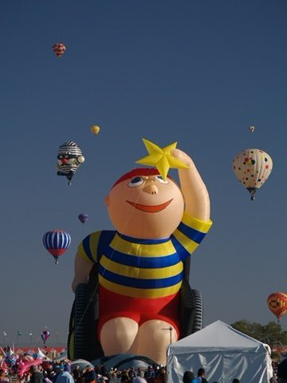

Grant Proposal Summary
Sky Without Limits
A one-page overview of our proposal to the Christopher & Dana Reeve Foundation Quality of Life Grants Program.

Grant Proposal Summary
A one-page overview of our proposal to the Christopher & Dana Reeve Foundation Quality of Life Grants Program.
The Ask
At $500 per flight — a 40–70% discount off market pricing — every dollar goes directly to flight operations. At maximum funding, this provides up to 49 flights. At any funding level, every $500 means one more person with paralysis gets to fly.
The Need
Approximately 1 in 50 Americans — a figure nearly 40% higher than previous estimates. 69% of Americans underestimate the prevalence. Many face severe barriers to recreation: inaccessible facilities, lack of adaptive equipment, prohibitive costs, and limited awareness of available programs.
Prevalence: Armour et al. (2016), American Journal of Public Health; Reeve Foundation Stats About Paralysis. Awareness gap: Reeve Foundation Living with Paralysis Survey, 2022. Barriers: Diaz et al. (2019), Sports Medicine and Arthroscopy Review.
Peer-reviewed research consistently demonstrates that participation in recreational activities improves physical health, mental well-being, self-esteem, and social connectedness for individuals with disabilities. Yet access to truly unique, memorable experiences remains out of reach for most.
Diaz et al. (2019); Isidoro-Cabañas et al. (2023), Healthcare
The Solution
Hot air ballooning is not a typical adaptive sport — it is a once-in-a-lifetime experience that requires no physical exertion from the participant while delivering an extraordinary sensory and emotional experience. From a balloon basket, the boundaries of daily life dissolve.
Our wheelchair-accessible basket features the largest door on any FAA-certified balloon. Each flight includes pre-flight orientation, full ground crew support, individualized accommodations, and the option for a caregiver or family member to fly alongside.

The Organization
Nonprofit since March 2000
Free flights completed with zero serious injuries
Third generation of leadership
Source: Reach for the Stars Foundation operational records, 2000–2026
Led by CEO Brian Lynch — a second-generation commercial balloon pilot — building on the foundation established by founder Pat Murphy and continued under the leadership of Kim Lynch. The late Dave Lynch, a commercial lighter-than-air pilot and Designated Pilot Examiner (one of the highest qualifications in balloon aviation), shaped every aspect of flight operations; his standards endure in every flight. Supported by dedicated family volunteers, experienced ground crew, and partnerships with disability camps, rehabilitation centers, and veteran service organizations.
Target Population
Serving participants with spinal cord injury, stroke, multiple sclerosis, cerebral palsy, ALS, and related conditions — selected by the foundation.
Well-suited to serve foundation priority populations including veterans with service-related paralysis, individuals from lower-income households, rural communities with limited access to adaptive recreation, and historically underrepresented communities.
Locations
Temecula Wine Country, CA — serving the greater San Diego, Riverside, and Los Angeles metro areas. Approximately 300 flyable days per year.
Enumclaw, WA — new 2026 collaboration with Seattle Ballooning, serving the greater Seattle metro area.
The foundation may also allocate a portion of grant funds to cover participant travel, ensuring geography never prevents someone from flying.
Budget
| Category | Amount | Details |
|---|---|---|
| Private Balloon Flight Operations | Up to $24,999 | Up to 49 flights × $500/flight — pilot, fuel, ground crew, wheelchair-accessible equipment. Market rate: $850–$1,650 per private flight. |
| Administrative & Insurance Costs | $0 (covered) | Covered by existing organizational resources — commercial operations revenue, donations, volunteer in-kind support |
Flexible allocation: The foundation may choose to maximize flights, allocate funds for participant travel, or structure a scholarship program — or any combination. We welcome collaboration on whatever model best serves the foundation's community.
Expected Outcomes Program Targets
The targets below are program projections set by Reach for the Stars Foundation — not externally sourced statistics. Survey instruments are adapted from the Satisfaction with Life Scale (SWLS) and the Positive and Negative Affect Schedule (PANAS), both validated in disability research.
| Outcome | Measure | Target |
|---|---|---|
| Individuals served | Unique participants completing flights | Up to 49 |
| Participant satisfaction | "Would you recommend this?" — post-flight survey | 90%+ yes |
| Sense of freedom | Pre/post survey (5-point Likert, SWLS/PANAS adapted) | 70%+ increase |
| Caregiver/family impact | Companion survey — shared experience quality | Average 4.0+ |
| Program completion rate | Scheduled flights successfully completed | 90%+ |
| Follow-up response rate | 30-day and 90-day survey completion | 70%+ |
Why This Foundation
Before his 1995 injury, Christopher Reeve was a licensed pilot who flew solo across the Atlantic twice. He held ratings in single-engine, multi-engine, instrument, commercial, and glider categories. Our wheelchair-accessible balloon could have taken Christopher Reeve back into the sky — offering a man who once soared under his own power the chance to soar again, without barriers.
When Dana Reeve created the Quality of Life Grants Program, she said it was about freedom. There is no purer expression of freedom than flight.
Reeve aviation credentials: Wikipedia; Biography.com. Dana Reeve quote: christopherreeve.org
It is a moment of freedom, a shift in perspective, and a powerful reminder that the sky truly has no limits. Whether the foundation funds 10 flights or 49, each one changes a life.